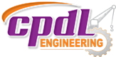

Asif Azad Remo
Civil and environmental engineer working across flood-hazard mapping, GIS and remote sensing, water-quality assessment, and construction quality control — pairing spatial analysis with field data and community engagement.
About
I work at the intersection of civil and environmental engineering and disaster risk — using GIS and field data to understand where flooding happens, who it affects most, and what can realistically be done about it at the community level. My current research centers on Chattogram City, where steep hill drainage and rapid, largely unplanned urban growth make flash floods a recurring and worsening problem.
Earlier, my undergraduate research assessed water quality on the Halda River, combining laboratory analysis with field sampling. Alongside research, a year as a quality control engineer on RCC building construction put me on site daily — BoQ estimating, drawing interpretation, material verification, concrete and reinforcement QC, and stage-wise sign-off from piling through to slabs. The same habit of pairing hard data with conditions on the ground carries through all of it.
Featured research
Flash flood risk in Chattogram City: a community-based risk reduction approach
M.Eng thesis project. It combines GIS-based flood-hazard mapping with household surveys, key-informant interviews, and focus group discussions to produce ward-level risk maps and a Community-Based Risk Reduction (CBRR) framework the city's most flood-prone wards can actually use — closing with a policy brief for municipal disaster planning, rather than a top-down hazard map alone.
- i Map flood-prone areas using hydrological and geospatial data
- ii Assess the physical and socio-economic vulnerability of exposed communities
- iii Design a CBRR framework tailored to Chattogram's context
Education
Present
M.Eng, Disaster Engineering & Management
Coursework: Challenges in Disaster & Environmental Engineering · Disaster & Emergency Management · Research Methodology & Tools in Disaster Management · Flood Control & Drainage Engineering · Climate Change: Mitigation & Adaptation · Environmental Impact Assessment · Environmental Management · Environmental Sanitation · Advanced Environmental Bioremediation · Waste Reduction, Water & Wastewater Treatment · Challenges of Concrete Construction for Extreme Conditions · Thesis project.
2023
B.Sc, Civil Engineering
Coursework: Environmental Engineering · Structural Analysis & Design · Design of Steel Structure · Prestressed Concrete · Geotechnical Engineering · Hydrology · Strength of Materials · Engineering Mechanics · Surveying.
Professional experience
Quality Control Engineer
Feb 2023 – Jan 2024- Set out building layouts — column and grid lines, levels — from structural and architectural drawings, using survey instruments and falling back to manual techniques where equipment was unavailable
- Prepared quantity take-offs and BoQ cost estimates for materials and work items
- Supervised and verified geotechnical investigation (SPT, bearing-capacity testing) carried out by soil-testing teams
- Inspected and approved incoming construction materials against specification and quantity before release to site
- Controlled concrete quality through casting — mix design, slump testing, placement, compaction by vibration, and curing — and cleared reinforcement layout, spacing, tying, lap length, and cover before every pour
- Held stage-wise inspection and sign-off authority for piles, footings and pile caps, basement mat foundations and walls, columns, beams, slabs, water reservoirs, staircases, shear walls, lintels, and false slabs
- Supervised precast pile fabrication and pile driving, and ran QC on bored cast-in-situ piling (boring, reinforcement cage, tremie concreting)
- Coordinated daily with owners, masons, foremen, and labour contractors, translating technical requirements for non-technical site personnel and resolving on-site execution issues
Engineering Intern — Site Works & Quality Control
Feb – Mar 2023
CPDL, Chattogram- Supervised and coordinated a 15-person team on active residential and commercial sites, delegating daily tasks and reporting progress to senior engineers
- Carried out site inspections and enforced safety, PPE, and regulatory compliance
- Supported planning and execution to keep works on quality, budget, and schedule
- Maintained site documentation, records, and progress reports
Research & field experience
Thesis Researcher — Flash Flood Risk & Community-Based Risk Reduction (CBRR)
2025- Conducted GIS-based flood-hazard mapping of Chattogram City (ArcGIS / QGIS) using rainfall, elevation, drainage, slope, DEM, and land-use data to model flood depth and extent
- Developed a composite vulnerability index (socio-economic exposure, sensitivity, adaptive capacity) and overlaid it with hazard maps to produce ward-level risk maps
- Designed and ran community surveys (KoboToolbox), key informant interviews, and focus group discussions across 5+ high-risk wards, capturing local coping mechanisms and gender-specific flood impacts
- Built a Community-Based Risk Reduction (CBRR) framework — early warning, drainage maintenance, flood-proofing, and evacuation — comparable to Community-Led Projects (CLP) in humanitarian DRR
- Coordinated stakeholder validation workshops with local government, NGOs, and community representatives, and drafted a policy brief for municipal disaster planning
Field Data Collector — Urban Water-Logging (Flood) Vulnerability Assessment
Sep 2021- Collected and organised field data to assess urban flood / water-logging vulnerability across affected areas
- Supported the research team in identifying key hazard-contributing factors
- Documented and analysed findings to support project outcomes
Undergraduate Researcher — Water Quality of the Halda River
Jan – Apr 2020- Led an independent thesis assessing water quality across river depths using field and laboratory methods
- Analysed environmental parameters to evaluate river health and ecosystem sustainability
- Presented findings at the 7th International Conference on Civil Engineering for Sustainable Development (ICCESD)
Publications
Skills
Field & Laboratory
Water sampling (Van Dorn bottle), sample preservation, pH & EC measurement, TDS, dissolved oxygen & COD analysis (titration), spectrophotometry, turbidity, salinity.
Analysis & GIS
GIS mapping & spatial analysis, terrain & vulnerability assessment, statistical analysis (SPSS, R), survey design (KoboToolbox), research documentation, comparison against BECR / FAO / WHO standards.
Tools & Software
ArcGIS Pro, ArcMap, QGIS, AutoCAD, UTM Geo Map, KoboToolbox, SPSS, R, Python, VS Code, PyCharm, Mendeley, MS Office / Google Workspace.
Courses & training
GIS and Its Applications
- Spatial data models, coordinate systems & projections
- Digitization, georeferencing & geodatabase management
- Spatial analysis, terrain modeling & suitability mapping
- Remote-sensing integration & disaster-risk mapping applications
Quality Control of RCC Building Construction
- Site survey, soil-test supervision, drawing interpretation, estimating & site layout
- Concrete-casting & reinforcement quality control
- QC across footing, pile cap, column, beam, slab, staircase, shear wall & lintel
- Precast & cast-in-situ pile QC; site coordination with owners, foremen & labour contractors
Achievements
- — University Merit Scholarship, 2nd, 3rd & 4th academic year
- — National Education Board Scholarship, JSC Examination
- — Participant, Inter-University Mechanics Olympiad 2022 (PCIU)